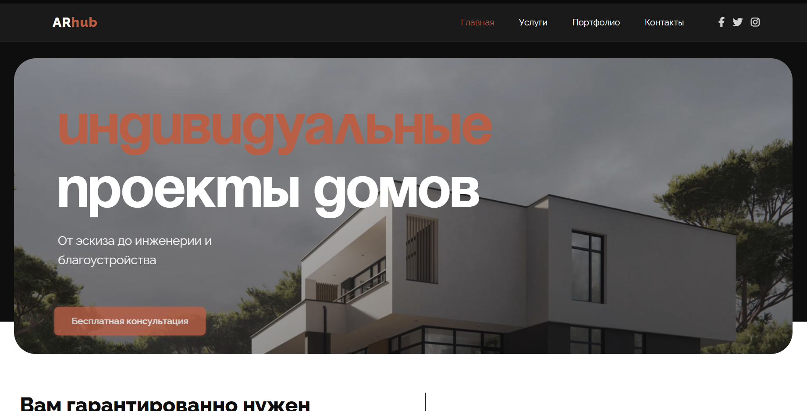
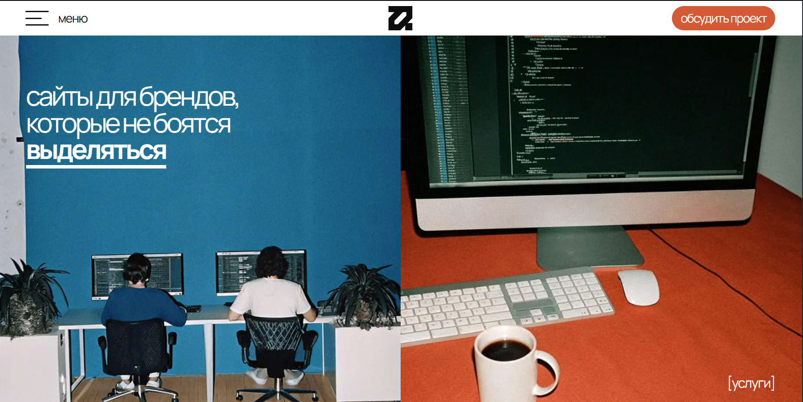
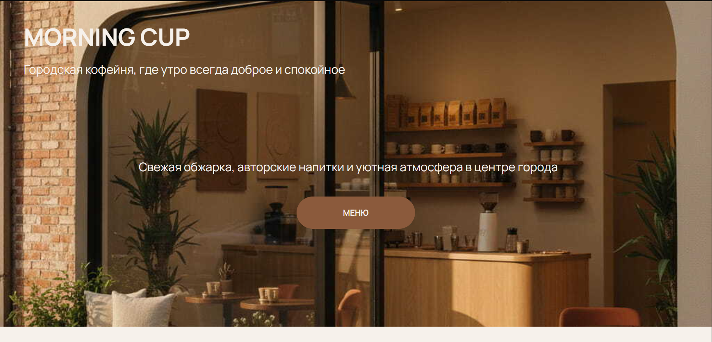

Создаю чистую, аккуратную и современную фронтенд‑разработку с плавными анимациями и продуманной структурой.
Создаю чистую, аккуратную и современную фронтенд‑разработку с плавными анимациями и продуманной структурой.
Мне 23 года, я начинающий frontend-разработчик, который любит чистый код, понятную структуру и плавные аккуратные интерфейсы. Училась самостоятельно, проходила небольшие курсы, а сейчас расту через практику, постоянное обучение и личные проекты.
В свободное время читаю книги, занимаюсь творчеством, изучаю новые технологии и подходы в разработке. Мне нравится совершенствоваться и не останавливаться на уже изученном. Я быстро учусь и всегда довожу работу до конца.
Я ответственно подхожу к задачам и стараюсь создавать интерфейсы, которые ощущаются легкими и комфортными для пользователя.
Адаптивная верстка, аккуратные сетки, работа с pastel UI, плавные анимации, создание логичной структуры.
Сайты‑визитки, небольшие лендинги, экспериментальные UI‑элементы, анимированные блоки, кастомные компоненты.
Практика HTML, CSS, JavaScript, адаптивной верстки и интерактивных элементов.
Создание аккуратного, адаптивного и структурированного сайта по готовому дизайну из Figma.
Точный перенос макета в Tilda с сохранением стиля, сетки и аккуратности элементов.
Настройка корректного отображения на телефонах, планшетах и компьютерах.
Исправление ошибок, оптимизация структуры, обновление стилей, анимаций и поведения интерфейса.

Сделала аккуратную структуру, чистый код и анимации. Реализовала мобильную, планшетную и десктопную версии, добившись полной pixel-perfect точности.

Собрала страницу с помощью Zero Block, передала визуальный стиль, настроила анимации и адаптив. Работала с сетками, слоями и динамическими элементами.

Реализация макета с продуманной структурой HTML, адаптивной сеткой и аккуратной организацией CSS. Оптимизация под мобильные устройства и плавные анимации интерфейса.